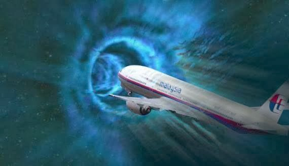
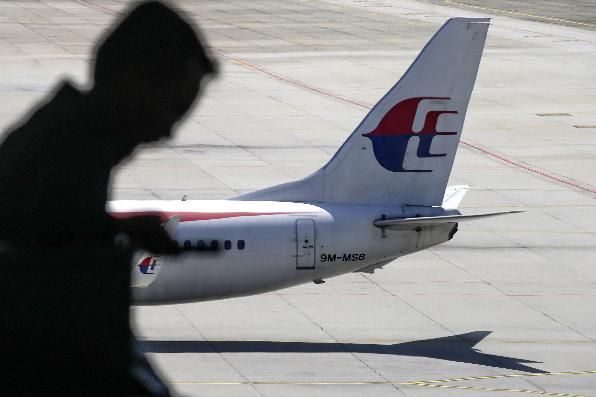

Malaysia Airlines MH370
Overview
This theory is based off of Malaysia Airlines MH370, the flight that never landed. The aircraft was carrying 239 occupants when it crashed and it's presumed that all occupants died. The cause of this accident is yet to be determined.
Click the image to learn more about flight MH370
The Conspiracy
There are many theories about what truly happened to flight MH370, but this webpage will focus on, including the idea that the aircraft was remotely hijacked or even that the pilot intentionally crashed the plane and killing all occupants on board.
The remote hijacking theory has been brought up several times (including through various news outlets such as ABC News.) According to experts, there were over 600 runways that the plane was able to land on, but wasn’t able to do so. If this theory turns out to be true, this would be the first remote hijacking, ever. According to historian Normian Davies, he said that there was technology developed to prevent another 9/11 style attack. With this technology, someone could remotely take control over the plane and fly it somewhere else. Theorists believe that MH370 was hijacked two times. One of those times was by the United States government, which was aware of the dangerous hijacking about to take place, but the dangerous hijackers found out about the US government's plan, and they changed the route to where they planned to get the plane to before. You may wonder why would MH370 be targeted, the reasoning behind this is that there were either important Beijing personnel on board or that there were carrying “sensitive” material.

Evidence
Another theory widely believed by the public, is that veteran pilot Captain Zahaire Ahmad Shah intentionally brought down the aircraft . Experts believe that this crash was deliberate due to the debris already discovered. Same aviation experts say that the crash was deliberate due to the debris being found. If it were a high speed collision (like believed by many people earlier), the impact would have caused the nose of the plane to be pressed and hallowed. Once that occurred, water would quickly enter the plane causing the plane to explode, if it exploded no debris could be found.

Click the image to learn more about this thoery and other theories about MH370